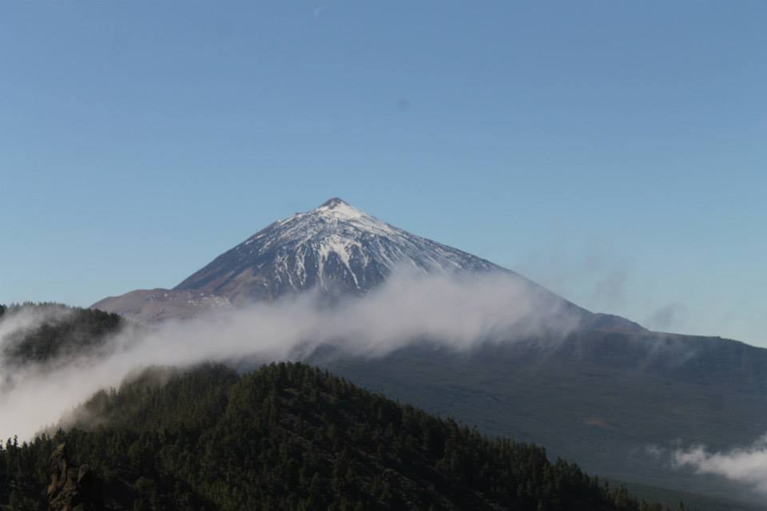
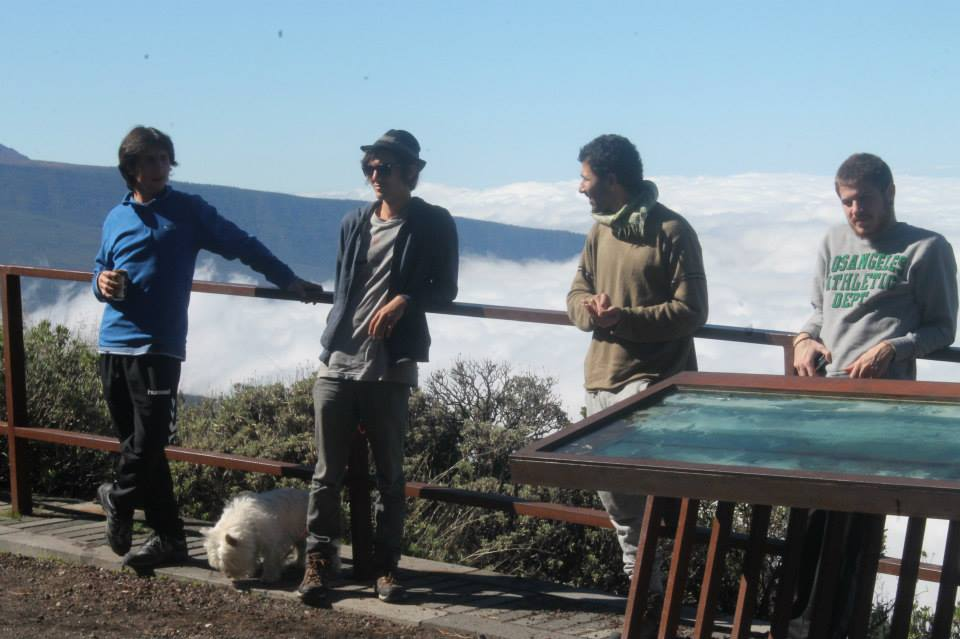
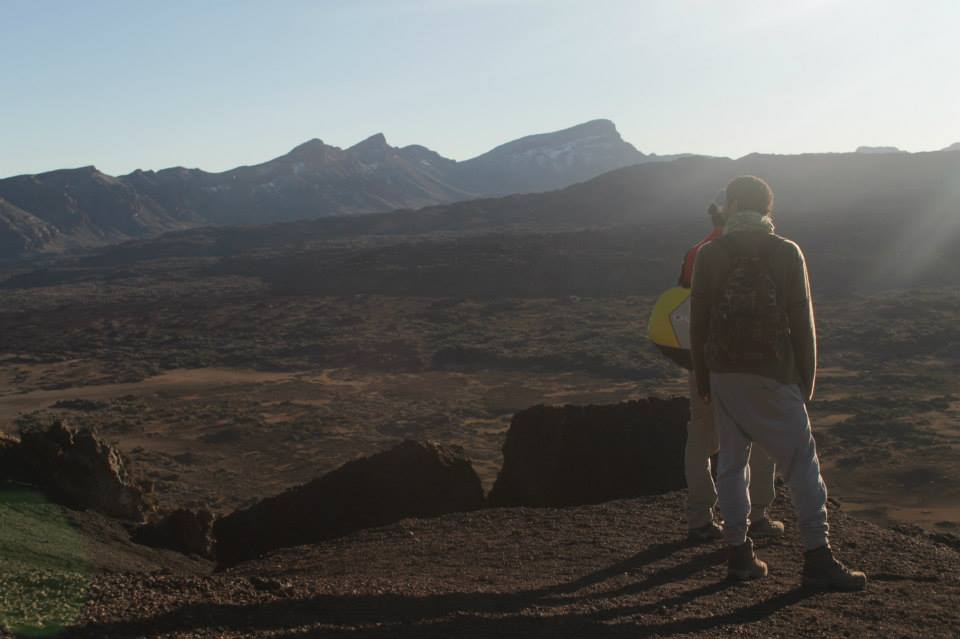
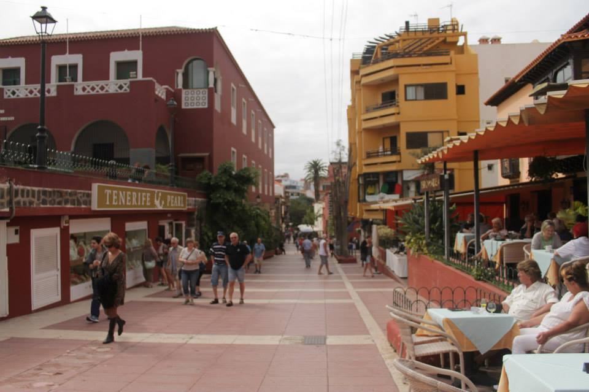

Tenerife Voyage: A 4-Day Island Adventure

Introduction
Tenerife, the largest of Spain's Canary Islands, is renowned for its diverse landscapes, ranging from stunning beaches to volcanic terrains. Known for its vibrant culture and lively festivals, Tenerife offers a perfect blend of relaxation and adventure. As Carl, a 38-year-old traveler from Australia, I embarked on a 4-day voyage to explore the natural beauty and cultural richness of Tenerife.
A Brief History of Tenerife: Tenerife has a rich history influenced by the indigenous Guanche people, Spanish conquest, and modern tourism. The island's capital, Santa Cruz de Tenerife, has evolved into a vibrant city that seamlessly blends tradition with contemporary culture. From historic towns like La Laguna to natural wonders like Mount Teide, Tenerife stands as a testament to Spain's diverse heritage.
Day 1: Arrival and Beach Relaxation
Upon arriving at Tenerife South Airport, I took a taxi to my beachfront hotel in Costa Adeje. The first day was all about unwinding and soaking in the sun on Tenerife's beautiful beaches.
After settling in, I headed straight to Playa de las Américas, known for its golden sands and crystal-clear waters. The afternoon was spent lounging on the beach, swimming in the ocean, and enjoying water sports like jet skiing and parasailing. In the evening, I dined at a local seafood restaurant, savoring fresh fish and paella while watching the sunset over the Atlantic Ocean.
Day 2: Exploring Mount Teide and Surroundings
The second day was dedicated to exploring the majestic Mount Teide National Park, a UNESCO World Heritage site.
I started early with a cable car ride to near the summit of Mount Teide, Spain's highest peak. The panoramic views from the top are breathtaking, offering a unique perspective of the island's volcanic landscapes. Hiking trails around the park provide opportunities to witness the island's unique flora and geological formations. In the afternoon, I visited Roque Cinchado, a striking rock formation that stands as a symbol of Tenerife's natural beauty. The day concluded with a visit to the Teide Observatory, where I learned about the astronomical research conducted in this remote location.
Day 3: Cultural Immersion and Historic La Laguna
On the third day, I delved into Tenerife's cultural and historical heritage by visiting the historic town of La Laguna.
La Laguna, a UNESCO World Heritage site, boasts well-preserved colonial architecture and vibrant local life. I walked through its charming streets, visiting landmarks like the Cathedral of La Laguna and the Plaza del Adelantado. The afternoon was spent exploring local museums and art galleries, gaining insights into the island's rich history and artistic endeavors. In the evening, I attended a traditional Canarian folk music performance, experiencing the lively rhythms and cultural expressions that define Tenerife's heritage.
Day 4: Beaches, Markets, and Farewell
On my final day, I enjoyed a mix of beach time, shopping, and leisurely exploration before bidding farewell to Tenerife.
I started the morning at Playa de las Teresitas, famous for its golden sands and calm waters, perfect for a relaxing swim. The afternoon was dedicated to exploring the vibrant local markets in Santa Cruz de Tenerife, where I picked up souvenirs, local crafts, and tasted traditional Canarian delicacies. I also took some time to revisit my favorite spots around Costa Adeje, capturing final photographs and soaking in the island's serene atmosphere. The trip concluded with a farewell dinner at a seaside restaurant, savoring the flavors of Tenerife one last time before preparing for departure.
Highlights
- Mount Teide National Park: Stunning volcanic landscapes and panoramic views.
- Playa de las Américas: Vibrant beach with water sports and lively atmosphere.
- La Laguna: Historic town with colonial architecture and cultural landmarks.
- Playa de las Teresitas: Beautiful golden sand beach perfect for relaxation.
- Teide Observatory: Insight into astronomical research in a remote setting.
- Roque Cinchado: Iconic rock formation symbolizing Tenerife's natural beauty.
- Santa Cruz de Tenerife Markets: Bustling markets offering local crafts and cuisine.
- Siam Park: Renowned water park known for its thrilling rides and attractions.
- Príncipe Felipe Park: Lush green spaces ideal for leisurely walks.
- Traditional Canarian Performances: Experiencing local music and dance.
Practical Information
Transportation
Tenerife is accessible by air via Tenerife South Airport and Tenerife North Airport, with regular flights from major European cities. Within the island, public transportation includes buses operated by TITSA, offering extensive routes across the island. Renting a car provides greater flexibility for exploring remote areas and natural parks. Taxis and ride-sharing services are also readily available.
Accommodation
Tenerife offers a wide range of accommodations, from luxury beachfront resorts in Costa Adeje to budget-friendly hotels and charming guesthouses in La Laguna. I stayed at a mid-range hotel in Costa Adeje, which provided excellent amenities and easy access to key attractions.
Budgeting
Tenerife is relatively affordable, with a comfortable daily budget ranging from €50 to €150, covering accommodation, meals, transportation, and activities.
Tips and Recommendations
Do’s and Don’ts
- Do: Book accommodations and tickets to major attractions in advance, especially during peak seasons.
- Don’t: Litter or disturb natural sites; help preserve Tenerife's natural beauty.
- Do: Wear comfortable footwear for extensive walking and hiking.
- Don’t: Engage in unsafe activities without proper guidance and equipment.
- Do: Carry a refillable water bottle; there are public drinking fountains available.
- Don’t: Skip validating your public transport tickets; fines are issued for non-validated tickets.
- Do: Respect local customs and traditions; observe proper etiquette when interacting with locals.
- Don’t: Jump queues; always wait your turn at popular attractions.
- Do: Use sunscreen and wear a hat, especially during summer months.
- Don’t: Forget to learn a few basic Spanish phrases to enhance your interactions.
Packing List
- Swimwear and beach essentials
- Sun protection (sunscreen, hat, sunglasses)
- Lightweight clothing
- Comfortable walking shoes
- Travel adapter (Type F socket)
- Camera or smartphone for photos
- Reusable water bottle
- Guidebook or map of Tenerife
- Personal medications
- Light jacket for cooler evenings
Local Etiquette
Respect the local community and their cultural practices. Always greet with a friendly smile and a polite gesture. Dress modestly when visiting religious and historical sites. When interacting with locals, use polite language and be mindful of cultural norms.
Cultural Immersion
Interacting with local Tenerife residents provided a deeper understanding of the island's cultural heritage and daily life. I participated in a traditional Canarian cooking class, learning to prepare authentic dishes like papas arrugadas and gofio, and experienced the rich flavors of Tenerife's cuisine firsthand.
Visiting local markets and attending cultural festivals offered insights into Tenerife's artistic and cultural evolution, fostering a greater appreciation for the island's dynamic spirit and enduring traditions.
Food and Cuisine
Tenerife's culinary scene is a delightful blend of traditional Canarian flavors, modern gastronomy, and international influences.
- Papas Arrugadas: Wrinkled potatoes boiled in saltwater, typically served with mojo sauces.
- Gofio: Roasted grain flour used in various dishes, both sweet and savory.
- Seafood Paella: Traditional Spanish rice dish enriched with fresh seafood.
- Bolas de Bermejo: Meatballs made with red kidney beans and spices.
- Ropa Vieja: Stew made from shredded beef and vegetables.
- Local Wines: A selection of Canarian wines, including Malvasía and Listán Negro.
- Turrón: Traditional Spanish nougat dessert available in various flavors.
- Helado Artesanal: Artisan ice cream available in numerous creative flavors.
I highly recommend dining at a traditional Canarian restaurant in La Laguna, where you can savor authentic dishes while enjoying the charming ambiance of local eateries.
Adventure and Activities
Tenerife offers a variety of activities for adventure enthusiasts and those seeking unique experiences:
- Guided Hiking Tours: Explore Tenerife's diverse landscapes with expert guides.
- Water Sports: Engage in activities like surfing, snorkeling, and paddleboarding.
- Mount Teide Cable Car: Enjoy stunning views with a cable car ride near the summit.
- Whale and Dolphin Watching: Take a boat tour to observe marine life in their natural habitat.
- Shopping: Visit shopping centers like Siam Mall and enjoy boutique stores in La Laguna.
- Nightlife: Experience vibrant nightlife with numerous bars, clubs, and live music venues.
- Photography Tours: Capture Tenerife's natural beauty and lively streets with guided photography sessions.
- Local Markets: Explore bustling markets like Mercado de Nuestra Señora de África for fresh produce and crafts.
- Golfing: Enjoy world-class golf courses with stunning ocean views.
- Cooking Workshops: Learn to prepare traditional Canarian dishes with local chefs.
One of the most thrilling activities was taking a guided bike tour through Tenerife's green corridors and along the coast, offering a perfect blend of urban exploration and natural beauty.
Personal Stories
Meeting Miguel, a local tour guide, was a highlight of my trip. He shared fascinating stories about Tenerife's history and culture, making my exploration even more meaningful. His passion for the island's heritage brought the sights to life, providing deeper insights into Tenerife's rich background.
Another unforgettable moment was participating in a traditional Canarian dance workshop, where I learned the energetic steps and enjoyed the vibrant rhythms that characterize Tenerife's cultural expressions.
Conclusion
Tenerife is a captivating destination that offers a perfect blend of relaxation, adventure, and cultural immersion. As Carl, I found my 4-day journey to be an enriching and exhilarating experience, uncovering the island's natural beauty and vibrant heritage.
If you're planning a trip to Spain, Tenerife should definitely be on your list. Whether you're seeking sun-soaked beaches, thrilling adventures, or deep cultural experiences, Tenerife has something for everyone.
Until next time, happy travels!
Visitor Testimonials
"Tenerife is a paradise for both nature lovers and culture enthusiasts. The beaches are pristine, and Mount Teide offers unforgettable views. Exploring La Laguna was like stepping back in time. Highly recommend!"
"The diversity of Tenerife is astounding. From the vibrant beaches of Costa Adeje to the historic streets of La Laguna, every day brought a new adventure. The local cuisine was absolutely delicious, and the friendly locals made the experience even more special."
Follow My Adventures
Stay connected and follow my journey through the links below: